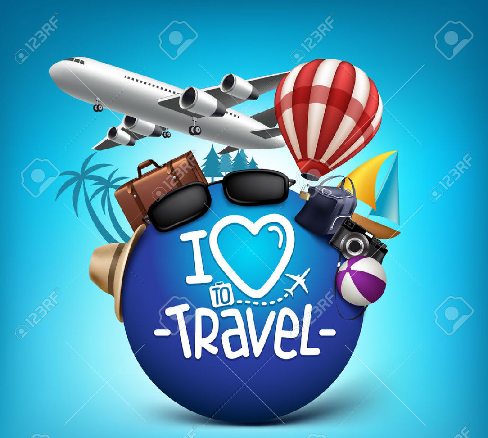
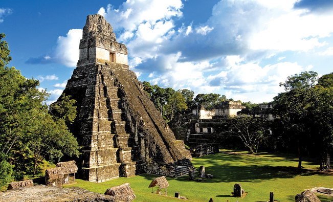
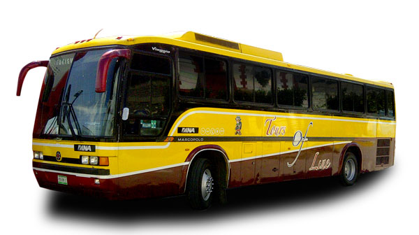

Turismo Creativo(1980)
Agencia con certificación IATA(International Air Travel Association)
con vasta experiencia en la venta de boletaje nacional e internacional
, asi como la atencion de viajes corporativos y de incentivo. Desde
1999 forma parte de la red de Franquicias American Express y ha sido
acreedora de prestigiosos premios a nivel nacional como el Top
Twenty de Aeroméxico.

Creatur Mayorista de Viajes(2006)
Agencia especializada en los viajes de placer en todo el mundo:
cruceros, resorts de playa y de esqui, tours y circuitos guiados,
paquetes de viaje, lunas de miel, viajes a eventos especiales
, safaris, viajes a medida, etc.
Cuenta con un departamento de Programas Juveniles
dedicado a los viajes de estudio y graduación, y organiza los
viajes de 15 Años más exitosos y completos de México.
Su departamento Mayorista ofrece a las agencias minoristas
toda nuestra gama de productos con el know how
de años de experiencia en la industria turistica y una
respetada solidez

Creatur Mayorista de Viajes(1998)
Empresa dedicada a organizar y operar recorridos
turisticos personalizados por el Mundo Maya, asi como
a proveer transportacion terrestre para
ejecutivos y de personal con los más altos
estandares
en seguridad.

Creatur Arrendadora(1998)
Franquiciatorio Alamo, que cuenta además con la renta
de autobuses turisticos y vans.